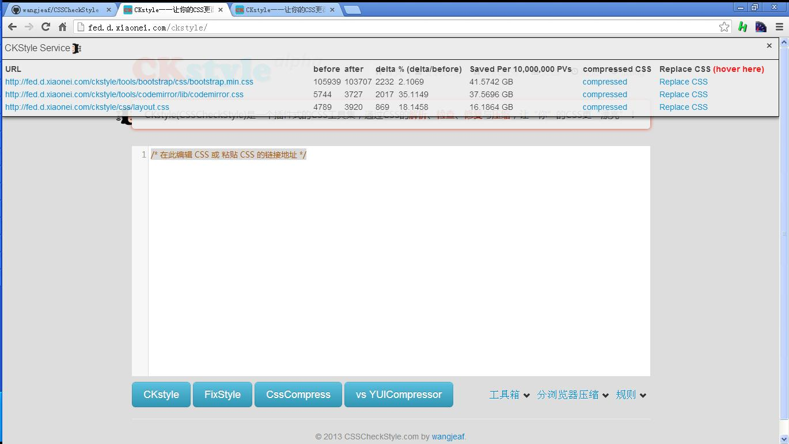

CKService 让您在不需要安装 Python 和 CKstyle的情况下，一键分析网站 CSS 的压缩情况和优化空间
针对本站的CKService结果

什么是CKService
目前，CKStyle已经做成了一个开放的服务CKService，通过访问服务的URL，并给出特定的参数，即可实时获悉CSS代码处理以后的结果
有了CKService，通过一次点击，即可知道：
- 本网站的所有CSS能被压缩到多小，压缩百分比
- 一千万次PV时能够节省多少 流量
- 在页面上 实时替换和恢复 压缩后的CSS文件，查看压缩后对页面的影响（轻松无压力的试用吧！）
Bookmarklet
将此链接：CKservice 拖动到书签栏，即可生成bookmarklet
目前，CKService的资源有限，所以使用CKService需要输入正确的邀请码，同时，由于本地存储跨域有局限性，因此每一个域都需要重复输入，敬请见谅~

如要申请邀请码，请通过邮件 wangjeaf@gmail.com 与我联系
部分网站的CKservice使用效果
人人网

淘宝网

一淘网

优酷网